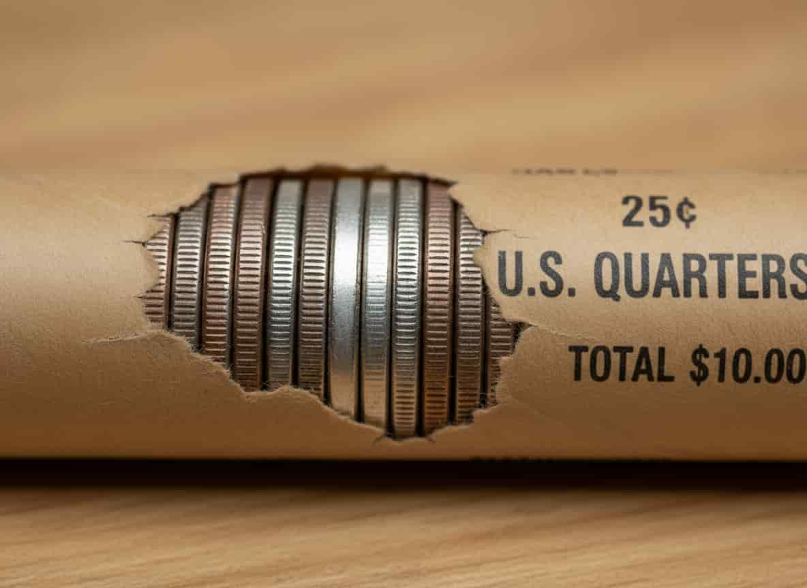

Key Finds
Silver
Finding silver quarters is easier than many people think, and they still show up in circulation today—especially in bank rolls. All Washington quarters dated 1932 through 1964 are made of 90% silver, so the fastest way to spot one is simply by checking the date. Silver quarters also have a distinct look: the edge of the coin will appear solid white, unlike modern quarters which have a brown copper stripe along the edge. Silver coins are also slightly heavier and make a sharper, higher-pitched sound when dropped compared to the duller “thunk” of clad coins. The best places to search include bank rolls, old coin jars, estate sales, and pocket change from cash-heavy businesses. With enough searching and patience, finding silver quarters is still very possible—and very rewarding for collectors.
- 1965–1967 Clad Planchet Errors – Look for missing clad layers or copper showing on one side. These appear in circulation fairly often.
- 1976 Bicentennial Quarters – Not rare, but some higher-grade or proof-like ones can be collectible. Good for beginners.
- 1999–2008 State Quarter Die Cracks – Many state quarters have small die cracks or chips that collectors enjoy finding.
- 2005 Kansas “In God We Rust” Error – Grease-filled die error that removes the “T” in TRUST. Easy to spot and popular with collectors.
- 2006 Colorado Die Break (“Extra Leaf/Extra Cliff”) – Small die chips that add shapes to the mountain. Often found in circulation.
- 2009 District of Columbia “Extra Finger” Variety – A well-known die chip on Duke Ellington’s hand.
- 2015 Homestead “Snow on the Roof” Errors – Multiple die chip varieties that appear on the roof and water spout. Very common and fun to collect.
- 2021 Crossing the Delaware Die Chips – Many modern die chips, including a popular one on Washington’s hat.
- 1968–1970 Missing Clad Layer Errors – Copper core showing through on one side; a common beginner error.
- 1977 Weak Strike Quarters – Not rare, but interesting for new collectors learning to spot strike issues.
- 1999 Delaware Spitting Horse – A famous die chip still found in circulation.
- 2004 Florida "Extra Tree" Die Chip – A small chip adding a phantom tree near the palm tree.
- 2017 Effigy Mounds Bird Poop Die Chip – A funny but real die chip on the bird’s wing.
- 2022 Maya Angelou Wing Die Chip – Extra "feather" caused by a small die break.
- 2023 Jovita Idar Bust Die Chips – Tiny chips along the hair and bust; common and collectible.